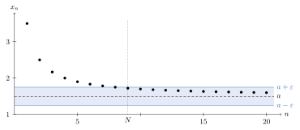

Chapter 3. Sequences of Real Numbers
Limits are the central idea of analysis. Derivatives, integrals and infinite series are all defined as limits. This chapter studies the simplest kind of limit, the limit of a sequence.
The definition of convergence is the first one in the book with the pattern “for all \(\varepsilon>0\), there exists an \(N\).” Learning to read and use that pattern is the main skill of this chapter. The rest of the chapter answers one question in several ways. How can a sequence be shown to converge? Bounded monotone sequences converge. Bounded sequences have convergent subsequences. Cauchy sequences converge. Each of these answers uses the least upper bound property of \(\mathbb{R}\). None of them is true in \(\mathbb{Q}\).
3.1 Convergence of a Sequence
Remark 3.1.1. Examples in this chapter use familiar functions such as \(\sqrt{x}\), \(\ln x\), \(\sin x\) and \(\cos x\). Their basic properties are assumed for now. The functions \(\ln x\) and \(e^x\) are defined carefully in Chapter 9. The functions \(\sin x\) and \(\cos x\) are defined in Section 12.4.
Definition 3.1.2. A sequence \(\{x_n\}_{n=1}^\infty\) in \(\mathbb{R}\) is said to converge to the real number \(a\), denoted by \(\lim_{n\to\infty}x_n=a\), or \(x_n\to a\), if for all \(\varepsilon>0\), there exists an \(N\in\mathbb{N}\) such that for all \(n\ge N\), \(|x_n-a|<\varepsilon\).
In words, \(x_n\to a\) means the terms \(x_n\) are eventually as close to \(a\) as anyone could ask. The number \(\varepsilon\) says how close. Once \(\varepsilon\) is given, there must be a place \(N\) in the sequence after which every term is within \(\varepsilon\) of \(a\). Smaller values of \(\varepsilon\) usually need larger values of \(N\). So \(N\) depends on \(\varepsilon\). Figure 3.1 shows this for the sequence in Example 3.1.3 with \(\varepsilon=\frac14\). Every term from the \(N\)th on lies in the band between \(a-\varepsilon\) and \(a+\varepsilon\).

Proof Technique (Proving a Limit with the Definition). To prove \(x_n\to a\) from the definition, start with an arbitrary \(\varepsilon>0\). Then find an \(N\) that works. Finding \(N\) is scratch work done before writing the proof. Start with \(|x_n-a|<\varepsilon\) and simplify until it reads \(n>\) (something). Then choose \(N\) larger than that something. The Archimedean Principle (Theorem 1.7.8) says such an \(N\in\mathbb{N}\) exists. The proof then runs forward. It states the choice of \(N\) and checks that \(|x_n-a|<\varepsilon\) for all \(n\ge N\). In Example 3.1.3, the scratch work is \(\left|x_n-\frac32\right|=\frac{2}{n}<\varepsilon\), which holds when \(n>\frac{2}{\varepsilon}\).
Example 3.1.3. Consider the sequence \(\{x_n\}\) defined by \(x_n=\frac{3n+4}{2n}\). Let \(\varepsilon>0\). Choose \(N\in\mathbb{N}\) such that \(N> \frac{2}{\varepsilon}\). So for all \(n\ge N\), \[\begin{aligned} \left|x_n-\frac{3}{2}\right|&=\left|\frac{3n+4}{2n}-\frac{3}{2}\right|\\ &=\left|\frac{3n+4-3n}{2n}\right|\\ &=\frac{2}{n}\\ &<\frac{2}{2/\varepsilon}=\varepsilon. \end{aligned}\] So \(x_n\to \frac{3}{2}\).
Example 3.1.4. Consider the sequence \(\{x_n\}\) defined by \(x_n=\frac{1}{n}\). Let \(\varepsilon>0\). Choose \(N\in\mathbb{N}\) such that \(N>\frac{1}{\varepsilon}\). Thus for all \(n\ge N\), \[\left|\frac{1}{n}-0\right|=\frac{1}{n}<\frac{1}{1/\varepsilon}=\varepsilon.\] So \(x_n\to 0\).
Example 3.1.5. Consider the sequence \(\{x_n\}\) defined by \(x_n=\frac{3n-7\sqrt{n}}{n}\). Let \(\varepsilon>0\). Choose \(N\in\mathbb{N}\) such that \(N> \frac{49}{\varepsilon^2}\). Now for all \(n\ge N\), \[\begin{aligned} \left|x_n-3\right|&=\left|\frac{3n-7\sqrt{n}}{n}-3\right|\\ &=\left|\frac{3n-7\sqrt{n}-3n}{n}\right|\\ &=\frac{7}{\sqrt{n}}\\ &<\frac{7}{\sqrt{49/\varepsilon^2}}=\varepsilon. \end{aligned}\] So \(x_n\to3\).
Proof Technique (Simplifying with Inequalities). Sometimes \(|x_n-a|<\varepsilon\) is hard to solve for \(n\). It is enough to find something larger and simpler that is still less than \(\varepsilon\). In Example 3.1.6, \(\frac{1}{6+8n}<\frac{1}{8n}\). Making the denominator smaller makes the fraction larger. Then \(\frac{1}{8n}<\varepsilon\) is easy to solve. The bound does not need to be the best one. Example 3.1.9 uses this idea twice.
Example 3.1.6. Consider the sequence \(\{x_n\}\) defined by \(x_n=\frac{1+2n}{3+4n}\). Let \(\varepsilon>0\). Choose \(N\in\mathbb{N}\) such that \(N>\frac{8}{\varepsilon}\). Then for all \(n\ge N\), \[\begin{aligned} \left|x_n-\frac{1}{2}\right|&=\left|\frac{1+2n}{3+4n}-\frac{1}{2}\right|\\ &=\left|\frac{2(1+2n)-(3+4n)}{2(3+4n)}\right|\\ &=\frac{1}{6+8n}\\ &<\frac{1}{8n}\\ &<\frac{1}{8(8/\varepsilon)}=\frac{\varepsilon}{64}<\varepsilon. \end{aligned}\] So \(x_n\to\frac{1}{2}\).
Example 3.1.7. Suppose \(0<|c|<1\). Consider the sequence \(\{c^n\}\). Let \(\varepsilon>0\). Choose \(N\in\mathbb{N}\) with \(N>\frac{\ln\varepsilon}{\ln|c|}\). Then for all \(n\ge N\), \[\ln|c|^n=n\ln|c|<\ln\varepsilon.\] So for all \(n\ge N\), \[\left|c^n-0\right|=|c|^n<\varepsilon.\]
Proof Technique (Showing a Sequence Diverges). A sequence \(\{x_n\}\) diverges if it does not converge to any \(a\in\mathbb{R}\). Negating the definition, \(\{x_n\}\) does not converge to \(a\) means there exists an \(\varepsilon>0\) such that for all \(N\in\mathbb{N}\), there exists an \(n\ge N\) with \(|x_n-a|\ge\varepsilon\). To show \(\{x_n\}\) diverges, this must hold for every \(a\in\mathbb{R}\). A proof by contradiction is often easier. Assume \(x_n\to a\), pick a small \(\varepsilon\), and find a contradiction. Example 3.1.8 picks \(\varepsilon=1\).
Example 3.1.8. Consider the sequence \(\{(-1)^n\}\). Assume by way of contradiction that \((-1)^n\to a\in\mathbb{R}\). Let \(\varepsilon=1\). So there exists an \(N\in\mathbb{N}\) such that for all \(n\ge N\), \(|x_n-a|<1\). Thus, for any odd integer \(n\ge N\), \(|x_n-a|<1\), and for any even integer \(n\ge N\), \(|x_n-a|<1\). Choose \(n_0>N\). Then \[2=|x_{n_0}-x_{n_0+1}|\le |x_{n_0}-a|+|x_{n_0+1}-a|<2,\] a contradiction.
Example 3.1.9. Consider the sequence \(\{x_n\}\) defined by \(x_n=\frac{\cos n+3\sin n}{n^2+n-60}\). Let \(\varepsilon>0\). Choose \(N\in\mathbb{N}\) such that \(N>\max\left\{\frac{2}{\sqrt{\varepsilon}},60\right\}\). Then for all \(n\ge N\), \[\begin{aligned} \left|\frac{\cos n +3\sin n}{n^2+n-60}-0\right|&\le\frac{|\cos n|+3|\sin n|}{|n^2+n-60|}\\ &\le \frac{4}{|n^2+n-60|}\\ &=\frac{4}{n^2+n-60}\\ &\le \frac{4}{n^2}\\ &<\frac{4}{(2/\sqrt{\varepsilon})^2}=\varepsilon. \end{aligned}\] So \(x_n\to 0\).
Exercises
Exercise 3.1.1. Prove, using the \(\varepsilon\)-\(N\) definition, the following sequences \(\{x_n\}\) converge to the given number \(a\).
\(x_n=\dfrac{5n}{3n+2}\), \(a=\dfrac{5}{3}\)
\(x_n=\dfrac{12n^2+5\sqrt{n}}{2n^2}\), \(a=6\)
\(x_n=1-\dfrac{(-1)^n}{n}\), \(a=1\)
\(x_n=\dfrac{(1+4n)^2}{6n^2+n-75}\), \(a=\dfrac{8}{3}\)
Exercise 3.1.2. Define the sequence \(\{x_n\}\) by \(x_n=\frac{\sin(n\pi/2)}{8}\). Prove, using the \(\varepsilon\)-\(N\) definition, that this sequence diverges.
3.2 Properties of Convergent Sequences
Proving every limit from the definition would be slow. This section proves general rules instead. Limits add, multiply and divide as expected, and limits respect inequalities. With these rules, many limits can be found without going back to \(\varepsilon\) and \(N\).
Proof Technique (Using the Definition with a Specific \(\varepsilon\)). The definition of \(x_n\to a\) holds for every \(\varepsilon>0\). So a proof can use any specific \(\varepsilon\) it wants. The proof of Theorem 3.2.1 uses \(\varepsilon=\frac{|a_1-a_2|}{2}\). Also, if one statement holds for all \(n\ge N_1\) and another holds for all \(n\ge N_2\), then both hold for all \(n\ge\max\{N_1,N_2\}\).
Theorem 3.2.1. The limit of a convergent sequence is unique.
Proof. Assume by way of contradiction that there exists a sequence \(\{x_n\}\) and \(a_1,a_2\in\mathbb{R}\) such that \(x_n\to a_1\) and \(x_n\to a_2\) with \(a_1\ne a_2\). Since \(a_1\ne a_2\), \(|a_1-a_2|>0\). Since \(x_n\to a_1\), there exists an \(N_1\in\mathbb{N}\) such that for all \(n\ge N_1\), \[|x_n-a_1|<\frac{|a_1-a_2|}{2}.\] Since \(x_n\to a_2\), there exists an \(N_2\in\mathbb{N}\) such that for all \(n\ge N_2\), \[|x_n-a_2|<\frac{|a_1-a_2|}{2}.\]
Set \(N=\max\{N_1,N_2\}\). Then \[\begin{aligned} |a_1-a_2|&=|a_1-x_N+x_N-a_2|\\ &\le |a_1-x_N|+|a_2-x_N|\\ &<\frac{|a_1-a_2|}{2}+\frac{|a_1-a_2|}{2}\\ &=|a_1-a_2|, \end{aligned}\] a contradiction.
∎
Definition 3.2.2. A sequence \(\{x_n\}\) is said to be bounded if there exists an \(M>0\) such that \(|x_n|\le M\) for all \(n\in\mathbb{N}\).
Theorem 3.2.3. A convergent sequence is bounded.
Proof. Let \(\{x_n\}\) be a sequence in \(\mathbb{R}\) with \(x_n\to a\in\mathbb{R}\). Let \(\varepsilon=1\). So there exists an \(N\in\mathbb{N}\) such that for all \(n\ge N\), \(|x_n-a|<1\). Then, by the reverse triangle inequality, for all \(n\ge N\) \[1>|x_n-a|\ge\bigl||x_n|-|a|\bigr|\ge |x_n|-|a|.\] So for all \(n\ge N\), \(|x_n|<1+|a|\). Define \[M=\max\{|x_1|,|x_2|,\dots,|x_{N-1}|,|a|+1\}.\] Then \(|x_n|\le M\) for all \(n\in\mathbb{N}\). So \(\{x_n\}\) is bounded.
∎
Proof Technique (Splitting \(\varepsilon\)). In the proof of Theorem 3.2.4 (1), the goal is \(|(x_n+y_n)-(a+b)|<\varepsilon\). The Triangle Inequality splits this into \(|x_n-a|+|y_n-b|\). If each piece is less than \(\frac{\varepsilon}{2}\), the sum is less than \(\varepsilon\). This is allowed because the definition of \(x_n\to a\) works for every positive number, including \(\frac{\varepsilon}{2}\). The proof of (2) uses the same idea with \(\frac{\varepsilon}{2M}\) and \(\frac{\varepsilon}{2(|b|+1)}\). The \(+1\) in \(|b|+1\) avoids dividing by \(0\) when \(b=0\). The proof of (2) also adds and subtracts \(x_nb\), as in Section 1.6.
Theorem 3.2.4. Suppose that \(x_n\to a\) and \(y_n\to b\). Then
\(x_n+y_n\to a+b\);
\(x_ny_n\to ab\); and
if \(b\ne 0\) and \(y_n\ne 0\) for all \(n\in\mathbb{N}\), \(\frac{x_n}{y_n}\to\frac{a}{b}\).
Proof.
Let \(\varepsilon>0\). Since \(x_n\to a\), there exists an \(N_1\in\mathbb{N}\) such that for all \(n\ge N_1\), \(|x_n-a|<\frac{\varepsilon}{2}\). Since \(y_n\to b\), there exists an \(N_2\in\mathbb{N}\) such that for all \(n\ge N_2\), \(|y_n-b|<\frac{\varepsilon}{2}\).
Let \(N=\max\{N_1,N_2\}\). So for all \(n\ge N\), \[\begin{aligned} |(x_n+y_n)-(a+b)|&=|(x_n-a)+(y_n-b)|\\ &\le |x_n-a|+|y_n-b|\\ &<\frac{\varepsilon}{2}+\frac{\varepsilon}{2}=\varepsilon. \end{aligned}\] So \(x_n+y_n\to a+b\).
Since \(\{x_n\}\) converges, it is bounded, and so there exists an \(M>0\) such that \(|x_n|\le M\) for all \(n\in\mathbb{N}\). Let \(\varepsilon>0\). Since \(x_n\to a\), there exists an \(N_1\in\mathbb{N}\) such that for all \(n\ge N_1\), \(|x_n-a|<\frac{\varepsilon}{2(|b|+1)}\). Since \(y_n\to b\), there exists an \(N_2\in\mathbb{N}\) such that for all \(n\ge N_2\), \(|y_n-b|<\frac{\varepsilon}{2M}\).
Let \(N=\max\{N_1,N_2\}\). So for all \(n\ge N\), \[\begin{aligned} |x_ny_n-ab|&=|x_ny_n-x_nb+x_nb-ab|\\ &\le |x_ny_n-x_nb|+|x_nb-ab|\\ &=|x_n||y_n-b|+|b||x_n-a|\\ &<M\left(\frac{\varepsilon}{2M}\right)+|b|\left(\frac{\varepsilon}{2(|b|+1)}\right)\\ &<\frac{\varepsilon}{2}+\frac{\varepsilon}{2}=\varepsilon. \end{aligned}\]
Since \(y_n\to b\), there exists an \(N_1\in\mathbb{N}\) such that for all \(n\ge N_1\), \(|y_n-b|<\frac{|b|}{2}\). Notice the reverse triangle inequality implies that for \(n\ge N_1\), \[|b|-|y_n|\le |b-y_n| = |y_n-b|<\frac{|b|}{2}.\] Thus for all \(n\ge N_1\), \(\frac{|b|}{2}\le |y_n|\) and \(\frac{1}{|y_n|}\le \frac{2}{|b|}\).
Let \(\varepsilon>0\). Then, again, since \(y_n\to b\), there exists an \(N_2\in\mathbb{N}\) such that for all \(n\ge N_2\), \(|y_n-b|<\frac{\varepsilon|b|^2}{2}\).
Let \(N=\max\{N_1,N_2\}\). Then for all \(n\ge N\), \[\begin{aligned} \left|\frac{1}{y_n}-\frac{1}{b}\right|&=\frac{|y_n-b|}{|y_n||b|}\\ &\le \frac{2}{|b|^2}|y_n-b|\\ &<\frac{2}{|b|^2}\cdot\frac{\varepsilon|b|^2}{2}=\varepsilon. \end{aligned}\] So \(\frac{1}{y_n}\to \frac{1}{b}\). By (2), \(\frac{x_n}{y_n}\to \frac{a}{b}\).
∎
Corollary 3.2.5. If \(\{x_n\}\) is a convergent sequence in \(\mathbb{R}\) with \(x_n\to a\), then for all \(c\in\mathbb{R}\),
\(x_n+c\to a+c\); and
\(cx_n\to ca\).
Proof. Let \(\{c_n\}\) be defined by \(c_n=c\) for all \(n\in\mathbb{N}\). The result then follows directly from Theorem 3.2.4.
∎
Corollary 3.2.6. Let \(\{x_n\}\) and \(\{y_n\}\) be sequences of real numbers with \(\{y_n\}\) bounded and \(x_n\to 0\). Then \(x_ny_n\to 0\).
Proof. See Exercise 3.2.2.
∎
Theorem 3.2.7. Suppose that \(\{x_n\}\) and \(\{y_n\}\) are convergent sequences in \(\mathbb{R}\) with \(x_n\to a\) and \(y_n\to b\). If \(x_n\le y_n\) for all \(n\in\mathbb{N}\), \(a\le b\).
Proof. Assume by way of contradiction that \(a>b\). Thus \(\frac{a-b}{2}>0\). Since \(x_n\to a\), there exists an \(N_1\in\mathbb{N}\) such that for all \(n\ge N_1\), \(|x_n-a|<\frac{a-b}{2}\). So \(x_n-a>\frac{-a+b}{2}\) for all \(n\ge N_1\). Also, since \(y_n\to b\), there exists an \(N_2\in\mathbb{N}\) such that for all \(n\ge N_2\), \(|y_n-b|<\frac{a-b}{2}\). So for all \(n\ge N_2\), \(y_n-b<\frac{a-b}{2}\).
Set \(N=\max\{N_1,N_2\}\). Then \[y_{N}<\frac{a-b}{2}+b=\frac{a+b}{2}=a+\frac{-a+b}{2}<x_{N},\] a contradiction. So \(a\le b\).
∎
Corollary 3.2.8. Suppose that \(\{x_n\}\) and \(\{y_n\}\) are convergent sequences in \(\mathbb{R}\) with \(x_n\to a\) and \(y_n\to b\). If there exists an \(N\in\mathbb{N}\) such that \(x_n\le y_n\) for all \(n\ge N\), \(a\le b\).
Corollary 3.2.9. If \(x_n\to c\) and if there exists an \(N\in\mathbb{N}\) such that for all \(n\ge N\), \(a\le x_n\le b\), \(a\le c\le b\).
Theorem 3.2.10 (Squeeze Theorem).
Suppose \(\{x_n\}\), \(\{y_n\}\), and \(\{z_n\}\) are sequences in \(\mathbb{R}\) with \(x_n\to a\), \(y_n\to a\). Then if \(x_n\le z_n\le y_n\) for all \(n\in\mathbb{N}\), \(z_n\to a\).
Proof. Let \(\varepsilon>0\). Since \(x_n\to a\), there exists an \(N_1\in\mathbb{N}\) such that for all \(n\ge N_1\), \(|x_n-a|<\varepsilon\). Thus for all \(n\ge N_1\), \[-\varepsilon<x_n-a<\varepsilon,\] or \[a-\varepsilon<x_n<a+\varepsilon.\] Likewise, since \(y_n\to a\), there exists an \(N_2\in\mathbb{N}\) such that for all \(n\ge N_2\), \(|y_n-a|<\varepsilon\). Thus for all \(n\ge N_2\), \[a-\varepsilon<y_n<a+\varepsilon.\]
Set \(N=\max\{N_1,N_2\}\). Then for all \(n\ge N\), \[a-\varepsilon<x_n\le z_n\le y_n<a+\varepsilon.\] So for all \(n\ge N\), \(|z_n-a|<\varepsilon\), implying \(z_n\to a\).
∎
Corollary 3.2.11 (Squeeze Theorem). Suppose \(\{x_n\}\), \(\{y_n\}\), and \(\{z_n\}\) are sequences in \(\mathbb{R}\) with \(x_n\to a\), \(y_n\to a\). Then if there exists an \(N\in\mathbb{N}\) such that \(x_n\le z_n\le y_n\) for all \(n\ge N\), \(z_n\to a\).
Definition 3.2.12. A sequence \(\{x_n\}\) is
increasing if \(x_{n+1}\ge x_n\) for all \(n\in\mathbb{N}\);
strictly increasing if \(x_{n+1}>x_n\) for all \(n\in\mathbb{N}\);
decreasing if \(x_{n+1}\le x_n\) for all \(n\in\mathbb{N}\);
strictly decreasing if \(x_{n+1}<x_n\) for all \(n\in\mathbb{N}\); and
monotonic if \(\{x_n\}\) is either increasing or decreasing.
Theorem 3.2.13. Suppose \(\{x_n\}\) is monotonic. Then \(\{x_n\}\) converges if and only if \(\{x_n\}\) is bounded.
Proof. (\(\Rightarrow\)) This result is an immediate consequence of Theorem 3.2.3.
(\(\Leftarrow\)) Assume \(\{x_n\}\) is bounded, and without loss of generality, assume \(\{x_n\}\) is increasing. Let \(A=\{x_n:n\in\mathbb{N}\}\). Now since \(\{x_n\}\) is bounded, \(A\) has an upper bound. So \(A\) has a least upper bound in \(\mathbb{R}\), say \(\alpha=\sup A\).
Let \(\varepsilon>0\). Since \(\alpha=\sup A\), by Theorem 1.7.7, there exists an \(a\in A\) such that \(a>\alpha-\varepsilon\); i.e., there exists an \(N\in\mathbb{N}\) such that \(x_N=a>\alpha-\varepsilon\). But \(\{x_n\}\) is increasing. So for all \(n\ge N\), \(\alpha\ge x_n>\alpha-\varepsilon\). So for all \(n\ge N\), \(|x_n-\alpha|<\varepsilon\). So \(x_n\to\alpha\).
∎
This theorem depends on the least upper bound property. It is false in \(\mathbb{Q}\). For example, let \(x_n\) be the decimal expansion of \(\sqrt2\) cut off after \(n\) digits, so \(x_1=1.4\), \(x_2=1.41\), \(x_3=1.414\), and so on. Each \(x_n\) is rational, the sequence is increasing, and it is bounded above by \(2\). Its limit is \(\sqrt2\), which is not in \(\mathbb{Q}\).
Corollary 3.2.14. If \(\{x_n\}\) is bounded and if there exists an \(N\in\mathbb{N}\) such that for all \(n\ge N\), \(x_{n+1}\ge x_n\), or for all \(n\ge N\), \(x_{n+1}\le x_n\) (\(x_n\) is eventually monotonic), \(\{x_n\}\) converges.
Exercises
Exercise 3.2.1. Suppose that \(x_n\to a\). Prove by induction that, for \(k\in\mathbb{N}\), \((x_n)^k\to a^k\).
Exercise 3.2.2. Suppose \(\{x_n\}\) and \(\{y_n\}\) are sequences in \(\mathbb{R}\) with \(\{y_n\}\) bounded and \(x_n\to0\). Prove \(x_ny_n\to0\). (Note: \(\{y_n\}\) does not necessarily converge.) Find an example to show the condition that \(\{y_n\}\) is bounded is necessary. [Solution]
Exercise 3.2.3. Prove that a bounded decreasing sequence \(\{x_n\}\) converges by appealing to the sequence \(\{-x_n\}\).
3.3 Recursively Defined Sequences
Many sequences are defined by a rule that gives each term from the one before it. Such sequences come up in numerical methods for solving equations. Example 3.3.4 below is Newton’s method for finding \(\sqrt3\). Often there is no formula for \(x_n\) at all. So the theorems of Section 3.2 are the main tools.
Example 3.3.1. The sequence \(\{x_n\}\) where \(x_n\) is the finite decimal expansion consisting of \(n\) \(1\)s after the decimal converges to \(\frac{1}{9}\). To see this, first, notice that \(x_1=0.1\), \(x_2=0.11\), \(x_3=0.111\), and so on. Since \(\{x_n\}\) is bounded and increasing, there exists an \(a\in\mathbb{R}\) such that \(x_n\to a\). So \(x_{n+1}\to a\) as well. But \[10x_{n+1}-x_n=1.\] So \[\lim_{n\to\infty}(10x_{n+1}-x_n)=1.\] Therefore \(10a-a=1\). So \(a=\frac{1}{9}\).
Proof Technique (Recursive Sequences). Many recursive sequences are handled in three steps. First, use induction to show the sequence is bounded. Second, use induction to show the sequence is monotone. Then by Theorem 3.2.13, the sequence converges, say \(x_n\to a\). Third, take the limit of both sides of the recursive formula and solve for \(a\). The order matters. The third step only makes sense once the limit is known to exist. For example, let \(x_1=1\) and \(x_{n+1}=2x_n\). Taking limits of both sides gives \(a=2a\), so \(a=0\). But \(x_n=2^{n-1}\), which diverges.
Example 3.3.2. The sequence defined recursively by \(x_1=1\) and \(x_{n+1}=\frac{2x_n+3}{4}\) converges to \(\frac{3}{2}\). First, notice \(x_1=1<2\). Using induction, assume there is a \(k\in\mathbb{N}\) with \(x_k<2\). So \[x_{k+1}=\frac{2x_k+3}{4}\le \frac{7}{4}<2.\] By induction, \(\{x_n\}\) is bounded above by \(2\). Next, notice \(x_1=1\) and \(x_2=\frac{5}{4}>1=x_1\). Again, using induction, assume there is a \(k\in\mathbb{N}\), \(k>1\) with \(x_k>x_{k-1}\). Then \[x_{k+1}=\frac{2x_k+3}{4}>\frac{2x_{k-1}+3}{4}=x_k.\] So by induction, \(\{x_n\}\) is increasing. Thus \(\{x_n\}\) is bounded and monotonic, so it converges, say \(x_n\to a\).
Now, since \(x_n\to a\), \(x_{n+1}\to a\). But \(x_{n+1}=\frac{2x_n+3}{4}\), implying \[\lim_{n\to\infty}x_{n+1}=\lim_{n\to\infty}\frac{2x_n+3}{4},\] or \(a=\frac{2a+3}{4}\). So \(a=\frac{3}{2}\).
Example 3.3.3. The sequence defined recursively by \(x_1=5\) and \(x_{n+1}=\sqrt{4+x_n}\), \(n\ge 1\) converges to \(\frac{1+\sqrt{17}}{2}\). Here, notice \(x_1=5>0\). Now assume by way of induction that there is a \(k\in\mathbb{N}\) with \(x_k>0\). Then \[x_{k+1}=\sqrt{4+x_k}>\sqrt{4}>0.\] So by induction, \(\{x_n\}\) is bounded below by zero. Also, \(x_1=5\) and \(x_2=3<x_1\). Again, by way of induction, assume there is a \(k\in\mathbb{N}\), \(k>1\), with \(x_k<x_{k-1}\). Then \[x_{k+1}=\sqrt{4+x_k}<\sqrt{4+x_{k-1}}=x_k.\] So by induction, \(\{x_k\}\) is decreasing. Thus \(\{x_k\}\) is bounded and decreasing, so it converges, say \(x_n\to a\).
Now, since \(x_n\to a\), \(x_{n+1}\to a\). But since \(x_{n+1}=\sqrt{4+x_n}\), \[\lim_{n\to\infty} x_{n+1}=\lim_{n\to\infty}\sqrt{4+x_n}.\] So \(a=\sqrt{4+a}\). Since \(x_n>0\) for all \(n\in\mathbb{N}\), \(a\ge0\) by Theorem 3.2.7. Thus \(a=\frac{1+\sqrt{17}}{2}\).
Example 3.3.4. The sequence defined recursively by \(x_1=1\) and \(x_{n+1}=\frac{x_n^2+3}{2x_n}\) converges to \(\sqrt{3}\). Notice \(x_2=2\ge \sqrt{3}\). Assume by way of induction that for \(k\in\mathbb{N}\), \(k>1\), \(x_k>\sqrt{3}\). Notice that the quadratic \(x^2-2\sqrt{3}x+3>0\) for all \(x\in\mathbb{R}\) with \(x\ne\sqrt{3}\). Then \[x_{k+1}=\frac{x_k^2+3}{2x_k}>\sqrt{3}.\] So by induction, for \(n\ge 2\), \(\{x_n\}\) is bounded below by \(\sqrt{3}\). Now, notice \(x_2=2\) and \(x_3=\frac{7}{4}<x_2\). Again, by way of induction, assume that for \(k\in\mathbb{N}\), \(k>2\), \(x_k<x_{k-1}\). Then \[x_{k+1}=\frac{x_k^2+3}{2x_k}<\frac{x_k^2+x_k^2}{2x_k}=x_k.\] Thus \(\{x_k\}\) is bounded and eventually decreasing. So \(x_n\) converges, say \(x_n\to a\).
Now, since \(x_n\to a\), \(x_{n+1}\to a\). But since \(x_{n+1}=\frac{x_n^2+3}{2x_n}\), \[\lim_{n\to\infty} x_{n+1}=\lim_{n\to\infty}\frac{x_n^2+3}{2x_n}.\] So \(a=\frac{a^2+3}{2a}\). Since \(x_n>\sqrt{3}\) for \(n\ge2\), \(a\ge\sqrt{3}>0\). Thus \(a=\sqrt{3}\).
Exercises
Exercise 3.3.1. Prove the sequence defined recursively by \(x_1=2\), \(x_{n+1}=\frac{4x_n+7}{10}\) converges, and determine the limit. [Solution]
Exercise 3.3.2. Prove the sequence defined recursively by \(x_1=5\), \(x_{n+1}=\frac{2x_n^2+5}{4x_n}\) converges, and determine the limit.
3.4 Subsequences
A sequence that does not converge can still have parts that do. For example, \(\{(-1)^n\}\) diverges, but every even-numbered term is \(1\). Subsequences make this idea precise. The main result of the section is the Bolzano–Weierstrass Theorem. Every bounded sequence has a convergent subsequence.
Definition 3.4.1. If \(\{n_k\}_{k=1}^\infty\) is a strictly increasing sequence of positive integers, then the sequence \(\{x_{n_k}\}_{k=1}^\infty\) is called a subsequence of \(\{x_n\}\).
Example 3.4.2. The sequence \(\left\{\sin\left(\frac{n\pi}{2}\right)\right\}\) has subsequences \[\{x_{2k}\}=\{0,0,0,0,\dots\},\] \[\{x_{2k-1}\}=\{1,-1,1,-1,\dots\},\] and \[\{x_{4k+1}\}=\{1,1,1,1,\dots\}.\]
Theorem 3.4.3. Suppose \(\{x_n\}\) is a sequence with \(x_n\to a\). Then every subsequence of \(\{x_n\}\) converges to \(a\).
Proof. Let \(\{x_{n_k}\}\) be a subsequence of \(\{x_n\}\). Let \(\varepsilon>0\). Since \(x_n\to a\), there exists an \(N\in\mathbb{N}\) such that for all \(n\ge N\), \(|x_n-a|<\varepsilon\). Now there exists a \(K\in\mathbb{N}\) such that \(n_k\ge N\) for all \(k\ge K\). Thus for all \(k\ge K\), \(|x_{n_k}-a|<\varepsilon\).
∎
Theorem 3.4.4 (Nested Interval Theorem).
Suppose \(\{I_n\}\), \(I_n=[a_n,b_n]\), is a sequence of closed intervals such that for all \(n\in\mathbb{N}\), \(I_{n+1}\subset I_n\). The sequences \(\{a_n\}\) and \(\{b_n\}\) converge, and \(\bigcap_{n=1}^\infty I_n=[\alpha,\beta]\), where \(a_n\to\alpha\) and \(b_n\to \beta\). Moreover, if \(b_n-a_n\to 0\), then \(\alpha=\beta\) is the only common point to every interval \(I_n\).
Proof. Since \(I_{n+1}\subset I_n\), \(a_n\le a_{n+1}\) and \(b_{n+1}\le b_n\). So \(\{a_n\}\) is an increasing sequence and \(\{b_n\}\) is a decreasing sequence. Furthermore, since for all \(n\in\mathbb{N}\), \(a_1\le a_n\le b_n\le b_1\), \(\{a_n\}\) and \(\{b_n\}\) are bounded sequences. Thus \(\{a_n\}\) and \(\{b_n\}\) converge, say \(a_n\to\alpha\) and \(b_n\to\beta\).
By Theorem 3.2.7, \(\alpha\le \beta\), and since \(\{a_n\}\) is increasing and \(\{b_n\}\) is decreasing, for all \(n\in\mathbb{N}\), \(a_n\le\alpha\le \beta\le b_n\). So \([\alpha,\beta]\subset I_n\) for all \(n\in\mathbb{N}\). Thus \([\alpha,\beta]\subset \bigcap_{n=1}^\infty I_n\). If \(x\in \bigcap_{n=1}^\infty I_n\), then for all \(n\in\mathbb{N}\), \(a_n\le x\) and \(x\le b_n\). So by Corollary 3.2.9, \(\alpha\le x\le \beta\). So \(x\in[\alpha,\beta]\) and \(\bigcap_{n=1}^\infty I_n\subset[\alpha,\beta]\). Therefore \([\alpha,\beta]=\bigcap_{n=1}^\infty I_n\).
If \[\beta-\alpha=\lim_{n\to\infty}(b_n-a_n)=0,\] then \(\alpha=\beta\). So \(\bigcap_{n=1}^\infty I_n=[\alpha,\beta]=\{\alpha\}\).
∎
Both conditions on the intervals matter. If the intervals are not closed, the intersection can be empty. For example, \(\bigcap_{n=1}^\infty\left(0,\frac1n\right)=\emptyset\) by the Archimedean Principle. If the intervals are not bounded, the intersection can also be empty. For example, \(\bigcap_{n=1}^\infty[n,\infty)=\emptyset\).
Proof Technique (Bisection). The proof of the Bolzano–Weierstrass Theorem cuts an interval in half again and again. At each step it keeps a half that still contains infinitely many terms of the sequence. The lengths of the intervals go to \(0\). The Nested Interval Theorem then gives one point common to all the intervals. This technique is called bisection. It appears again in later chapters. Figure 3.2 shows the first few steps.
Theorem 3.4.5 (Bolzano–Weierstrass Theorem).
Every bounded sequence in \(\mathbb{R}\) has a convergent subsequence.
Proof. Let \(\{x_n\}\) be a bounded sequence in \(\mathbb{R}\). So there exists an \(M>0\) such that \(|x_n|\le M\) for all \(n\in\mathbb{N}\). Let \(I_1=[-M,M]=[a_1,b_1]\) and define \(c_1=\frac{a_1+b_1}{2}\).
Since the sequence has infinitely many terms, it follows that there are infinitely many terms contained in either \([a_1,c_1]\) or \([c_1,b_1]\) (or both). Choose one that contains infinitely many terms and denote it by \(I_2=[a_2,b_2]\). In general, for \(k\in\mathbb{N}\), \(I_k=[a_k,b_k]\), define \(c_k=\frac{a_k+b_k}{2}\) and define \(I_{k+1}\) to be \([a_k,c_k]\) if it contains infinitely many terms of \(\{x_n\}\) or \([c_k,b_k]\) if it contains infinitely many terms of \(\{x_n\}\) and \([a_k,c_k]\) does not. Notice \(I_{k+1}\subset I_k\).
This construction gives a nested sequence of intervals \(\{I_n\}\). By the Nested Interval Theorem (Theorem 3.4.4), the sequences \(\{a_n\}\) and \(\{b_n\}\) converge, say \(a_n\to\alpha\) and \(b_n\to\beta\).
Also, \[b_n-a_n=\frac{b_{n-1}-a_{n-1}}{2}=\frac{b_1-a_1}{2^{n-1}}=\frac{2M}{2^{n-1}}\to 0.\] So \(\bigcap_{n=1}^\infty I_n=\{\alpha\}\).
Now, choose an \(x\in I_1\cap\{x_n:n\in\mathbb{N}\}\) and label this \(x\) as \(x_{n_1}\). Next, choose an \(x\in I_2\cap\{x_n:n\in\mathbb{N},\ n>n_1\}\). In general, for \(k\in\mathbb{N}\), choose an \(x\in I_k\cap\{x_n:n\in\mathbb{N},\ n>n_{k-1}\}\) and label this \(x\) as \(x_{n_k}\). So \(\{x_{n_k}\}\) is a subsequence of \(\{x_n\}\). For each \(k\in\mathbb{N}\), \(a_k\le x_{n_k}\le b_k\). So by the Squeeze Theorem (Theorem 3.2.10), \(x_{n_k}\to\alpha\).
∎
Boundedness is needed. The sequence \(\{n\}\) has no convergent subsequence. The theorem is also false in \(\mathbb{Q}\). A sequence of rational numbers converging to \(\sqrt2\) is bounded. By Theorem 3.4.3, each of its subsequences converges to \(\sqrt2\), so none converges to a rational number.
Corollary 3.4.6. Suppose \(\{x_n\}\) is a sequence contained in \([a,b]\) where \(a,b\in\mathbb{R}\), \(a\le b\). Then \(\{x_n\}\) has a subsequence converging to a point in \([a,b]\).
Exercises
Exercise 3.4.1. Suppose that \(\{x_n\}\) is a sequence that is not bounded above. Show that there is a subsequence \(\{x_{n_k}\}\) such that \(x_{n_k}>k\) for all \(k\in\mathbb{N}\). [Hint]
Exercise 3.4.2. Let \(\varepsilon>0\) and \(a\in \mathbb{R}\). Suppose that a sequence \(\{x_n\}\) satisfies \(|x_n-a|\ge \varepsilon\) for all \(n\ge 1\). Prove that no subsequence of \(\{x_n\}\) can converge to \(a\).
3.5 Cauchy Sequences
To show a sequence converges from the definition, the limit has to be known first. Cauchy’s idea was to check instead that the terms get close to each other. In \(\mathbb{R}\) this is enough. In \(\mathbb{Q}\) it is not, which is one more sign of the hole at \(\sqrt2\).
Definition 3.5.1. A sequence \(\{x_n\}\) is a Cauchy sequence if for all \(\varepsilon>0\), there exists an \(N\in\mathbb{N}\) such that for all \(m,n\ge N\), \(|x_n-x_m|<\varepsilon\).
Theorem 3.5.2 (Cauchy Criterion).
A sequence \(\{x_n\}\) of real numbers is Cauchy if and only if it converges.
Proof. (\(\Leftarrow\)) Let \(\{x_n\}\) be a convergent sequence with \(x_n\to a\). Let \(\varepsilon>0\). So there exists an \(N\in\mathbb{N}\) such that for all \(n\ge N\), \(|x_n-a|<\frac{\varepsilon}{2}\). So for all \(m,n\ge N\), \[\begin{aligned} |x_n-x_m|&=|x_n-a+a-x_m|\\ &\le |x_n-a|+|x_m-a|\\ &<\frac{\varepsilon}{2}+\frac{\varepsilon}{2}=\varepsilon. \end{aligned}\] So \(\{x_n\}\) is Cauchy.
(\(\Rightarrow\)) Suppose \(\{x_n\}\) is Cauchy. So there exists an \(N\in\mathbb{N}\) such that for all \(m,n\ge N\), \(|x_n-x_m|<1\). Therefore, \(|x_n|<1+|x_N|\) for all \(n\ge N\). Thus, if \[M=\max\{|x_1|,|x_2|,\dots,|x_{N-1}|,1+|x_N|\},\] \(|x_n|\le M\) for all \(n\in\mathbb{N}\). So \(\{x_n\}\) is bounded. Therefore, by the Bolzano–Weierstrass Theorem (Theorem 3.4.5), there exists a convergent subsequence \(\{x_{n_k}\}\) with \(x_{n_k}\to a\).
Let \(\varepsilon>0\). So there exists an \(N_1\in\mathbb{N}\) such that for all \(m,n\ge N_1\), \(|x_n-x_m|<\frac{\varepsilon}{2}\). Since \(x_{n_k}\to a\), there exists a \(K\in\mathbb{N}\) with \(n_K>N_1\) such that for all \(k\ge K\), \(|x_{n_k}-a|<\frac{\varepsilon}{2}\). Then for all \(n\ge N_1\), \[\begin{aligned} |x_n-a|&=|x_n-x_{n_K}+x_{n_K}-a|\\ &\le |x_n-x_{n_K}|+|x_{n_K}-a|\\ &<\frac{\varepsilon}{2}+\frac{\varepsilon}{2}=\varepsilon. \end{aligned}\] So \(x_n\to a\).
∎
Appendix B uses Cauchy sequences of rational numbers to build \(\mathbb{R}\) out of \(\mathbb{Q}\).
Proof Technique (Proving Convergence Without Knowing the Limit). To use the definition of convergence, the limit \(a\) must be known. The Cauchy Criterion avoids this. It only compares terms of the sequence with each other. So it can prove a sequence converges even when the limit is unknown. Exercise 3.5.1 uses this idea.
Exercises
Exercise 3.5.1. Show the sequence \(\{x_n\}\) defined by \[x_n=\sum_{k=1}^{n}\frac{1}{k!}=1+\frac{1}{1\cdot2}+\frac{1}{1\cdot2\cdot3}+\cdots+\frac{1}{n!}\] converges by showing it is a Cauchy sequence. [Hint]
Exercise 3.5.2. Let \(x_n=\sum_{k=1}^n\frac1k\). Prove that \(x_{2n}-x_n\ge\frac12\) for all \(n\in\mathbb{N}\). Conclude that \(\{x_n\}\) is not a Cauchy sequence, so it diverges. [Solution]
3.6 Limit Superior and Limit Inferior of a Sequence
A bounded sequence does not have to converge. It still has a largest and a smallest cluster point. These are the limit superior and the limit inferior. They exist for every sequence, if \(\pm\infty\) are allowed, and they describe what the sequence does in the long run. The sequence converges exactly when the two are equal and finite.
Definition 3.6.1. For a real sequence \(\{x_n\}\), \(a\in\mathbb{R}\) is a cluster point of \(\{x_n\}\) if there is a subsequence of \(\{x_n\}\) converging to \(a\).
Example 3.6.2. \(\{(-1)^n\}\) has cluster points \(1\) and \(-1\).
Example 3.6.3. \(\left\{\sin\left(\frac{n\pi}{4}\right)\right\}\) has cluster points \(0\), \(1\), \(-1\), \(\frac{\sqrt{2}}{2}\), and \(-\frac{\sqrt{2}}{2}\).
Example 3.6.4. \(\left\{\frac{1}{n}\sin\left(\frac{n\pi}{2}\right)\right\}\) has limit \(0\) and hence its only cluster point is \(0\).
Definition 3.6.5. A sequence \(\{x_n\}\) diverges to \(\infty\) if for all \(M>0\), there exists an \(N\in\mathbb{N}\) such that for all \(n\ge N\), \(x_n>M\). \(\{x_n\}\) diverges to \(-\infty\) if for all \(M<0\), there exists an \(N\in\mathbb{N}\) such that for all \(n\ge N\), \(x_n<M\). In these cases, write \(\lim_{n\to\infty}x_n=\infty\) or \(x_n\to\infty\), and \(\lim_{n\to\infty}x_n=-\infty\) or \(x_n\to-\infty\).
Definition 3.6.6. \(\infty\) is a cluster point of \(\{x_n\}\) if for all \(M>0\) and for all \(N\in\mathbb{N}\), there exists an \(n\ge N\) such that \(x_n>M\). \(-\infty\) is a cluster point of \(\{x_n\}\) if for all \(M<0\) and for all \(N\in\mathbb{N}\), there exists an \(n\ge N\) such that \(x_n<M\).
Remark 3.6.7. If a set \(E\subset\mathbb{R}\) is not bounded above, write \(\sup E=\infty\). If \(E\) is not bounded below, write \(\inf E=-\infty\). With this convention, \(\sup\{x_k:k\ge n\}\) always makes sense. Let \(b_n=\sup\{x_k:k\ge n\}\). Then \(\{b_n\}\) is decreasing, so \(\lim_{n\to\infty}b_n\) exists. It is a real number if \(\{b_n\}\) is bounded below, by Theorem 3.2.13. It is \(-\infty\) if \(\{b_n\}\) is not bounded below. It is \(\infty\) if every \(b_n\) is \(\infty\). The same holds for \(\inf\{x_k:k\ge n\}\).
Definition 3.6.8. If \(\{x_n\}\) is a sequence of real numbers, then the limit superior of \(\{x_n\}\) is \[\limsup x_n = \lim_{n\to\infty}\left(\sup\{x_k:k\ge n\}\right)=\inf_{n\in\mathbb{N}}\left(\sup\{x_k:k\ge n\}\right).\] The limit inferior of \(\{x_n\}\) is \[\liminf x_n = \lim_{n\to\infty}\left(\inf\{x_k:k\ge n\}\right)=\sup_{n\in\mathbb{N}}\left(\inf\{x_k:k\ge n\}\right).\]
Example 3.6.9. Let \(x_n=(-1)^n\left(1+\frac1n\right)\). The terms with \(k\) even are positive and decrease toward \(1\). The terms with \(k\) odd are negative and increase toward \(-1\). So for each \(n\), \(\sup\{x_k:k\ge n\}=1+\frac1k\), where \(k\) is the first even number with \(k\ge n\). These suprema decrease to \(1\). So \(\limsup x_n=1\). In the same way, \(\liminf x_n=-1\). The sequence diverges, and its cluster points are \(1\) and \(-1\).
Theorem 3.6.10. Let \(\{x_n\}\) be a sequence of real numbers. Then
\(\limsup (-x_n)=-\liminf x_n\); and
\(\liminf x_n\le \limsup x_n\).
Proof.
Since for all \(n\in\mathbb{N}\), \(\sup\{-x_k:k\ge n\}=-\inf\{ x_k:k\ge n\}\), \(\limsup (-x_n)=-\liminf x_n\).
For all \(n\in\mathbb{N}\), \(\inf\{x_k:k\ge n\}\le\sup\{x_k:k\ge n\}\), implying \(\liminf x_n\le \limsup x_n\).
∎
Theorem 3.6.11. Let \(\{x_n\}\) be a sequence of real numbers. \(\limsup x_n=a\in\mathbb{R}\) if and only if for all \(\varepsilon>0\), there exists an \(N\in\mathbb{N}\) such that for all \(n\ge N\), \(x_n<a+\varepsilon\) and for all \(\varepsilon>0\) and for all \(N\in\mathbb{N}\), there exists an \(n\ge N\) such that \(x_n>a-\varepsilon\). Similarly, \(\liminf x_n=a\in\mathbb{R}\) if and only if for all \(\varepsilon>0\), there exists an \(N\in\mathbb{N}\) such that for all \(n\ge N\), \(x_n>a-\varepsilon\) and for all \(\varepsilon>0\) and for all \(N\in\mathbb{N}\), there exists an \(n\ge N\) such that \(x_n<a+\varepsilon\).
Proof. (\(\Rightarrow\)) Suppose \(a\in\mathbb{R}\) with \(a=\limsup x_n=\lim_{n\to\infty}b_n\), where \(b_n=\sup\{x_k:k\ge n\}\). Let \(\varepsilon>0\). Since \(\lim_{n\to\infty}b_n=a\), there exists an \(N\in\mathbb{N}\) such that for all \(n\ge N\), \(b_n<a+\varepsilon\). Since for each \(n\ge N\), \(x_n\le b_n\), \(x_n<a+\varepsilon\) for all \(n\ge N\).
Let \(\varepsilon>0\), \(N\in\mathbb{N}\). Since \(\lim_{n\to\infty}b_n=a\) and \(\{b_n\}\) is decreasing, \(b_n\ge a\) for all \(n\in\mathbb{N}\). In particular, \(b_N\ge a\). But since \(b_N=\sup\{x_k:k\ge N\}\), there exists an \(n\ge N\) such that \(x_n>b_N-\varepsilon\ge a-\varepsilon\).
(\(\Leftarrow\)) Let \(\varepsilon>0\). Again, define \(b_n=\sup\{x_k:k\ge n\}\). Since there exists an \(N\in\mathbb{N}\) such that for all \(n\ge N\), \(x_n<a+\varepsilon\), \(b_N\le a+\varepsilon\). Since \(\{b_n\}\) is decreasing, \(b_n\le a+\varepsilon\) for all \(n\ge N\). So \(\limsup x_n\le a+\varepsilon\) for arbitrary \(\varepsilon\), implying \(\limsup x_n \le a\). Assume by way of contradiction that \(\limsup x_n=a'<a\). Choose \(\varepsilon>0\) such that \(a'<a-2\varepsilon\). By the proof of (\(\Rightarrow\)), there exists an \(N\in\mathbb{N}\) such that \(x_n<a'+\varepsilon<a-\varepsilon\) for all \(n\ge N\), contradicting the hypothesis that for all \(\varepsilon>0\) and for all \(N\in\mathbb{N}\), there exists an \(n\ge N\) such that \(x_n>a-\varepsilon\). If \(\limsup x_n=-\infty\), then \(b_n<a-\varepsilon\) for all large \(n\), and the same contradiction follows. So \(\limsup x_n =a\).
∎
Theorem 3.6.12. Let \(\{x_n\}\) be a sequence of real numbers.
\(\limsup x_n = \infty\) if and only if \(\infty\) is a cluster point of \(\{x_n\}\).
\(\limsup x_n = -\infty\) if and only if \(\lim_{n\to\infty}x_n=-\infty\).
\(\liminf x_n=-\infty\) if and only if \(-\infty\) is a cluster point of \(\{x_n\}\).
\(\liminf x_n = \infty\) if and only if \(\lim_{n\to\infty}x_n=\infty\).
Proof.
(\(\Rightarrow\)) Suppose \(\limsup x_n=\infty\). Then, by definition, \(\lim_{n\to\infty}b_n = \infty\), where \(b_n=\sup\{x_k:k\ge n\}\). Let \(M>0\), \(N\in\mathbb{N}\). Then there exists a \(K\in\mathbb{N}\), \(K\ge N\), such that for all \(n\ge K\), \(b_n>M+1\). In particular, \(b_K>M+1\). Therefore \(\sup\{x_k:k\ge K\}>M+1\). So there exists an \(n_0\ge K\ge N\) with \(x_{n_0}>M\). So \(\infty\) is a cluster point of \(\{x_n\}\).
(\(\Leftarrow\)) Suppose \(\infty\) is a cluster point of \(\{x_n\}\). Let \(M>0\), \(N\in\mathbb{N}\). Then there exists a \(n_0\geq N\) such that \(x_{n_0}>M\). Therefore \(\sup\{x_k:k\ge N\}>M\). So \(b_N>M\). Since \(N\in\mathbb{N}\) was arbitrary, \(b_n>M\) for all \(n\in\mathbb{N}\). So \(\lim_{n\to\infty}b_n=\infty\), or \(\limsup x_n=\infty\).
(\(\Rightarrow\)) Suppose \(\limsup x_n=-\infty\). Then, by definition, \(\lim_{n\to\infty}b_n = -\infty\), where \(b_n=\sup\{x_k:k\ge n\}\). Let \(M<0\). There exists an \(N\in\mathbb{N}\) such that for all \(n\geq N\), \(b_n<M\). In particular, \(b_N<M\). So \(\sup\{x_k:k\ge N\}<M\). So \(M\) is an upper bound of \(\{x_k:k\ge N\}\). Therefore, \(x_n<M\) for all \(n\ge N\), implying \(\lim_{n\to\infty}x_n=-\infty\).
(\(\Leftarrow\)) Suppose \(\lim_{n\to\infty}x_n=-\infty\). Let \(M<0\). So there exists an \(N\in\mathbb{N}\) such that for all \(n\geq N\), \(x_n< M\). Thus \(\sup\{x_k:k\ge N\}\le M\). Therefore for all \(n\ge N\), \(\sup\{x_k:k\ge n\}\le M\), implying for all \(n\ge N\), \(b_n\le M\). So \(\lim_{n\to\infty}b_n=-\infty\). Therefore \(\limsup x_n=-\infty\).
This proof is similar to the proof of (1).
This proof is similar to the proof of (2).
∎
Corollary 3.6.13. Let \(\{x_n\}\) be a sequence of real numbers. \(\limsup x_n\) and \(\liminf x_n\) are the largest and smallest cluster points, respectively, of \(\{x_n\}\).
Proof. See Exercise 3.6.1.
∎
Corollary 3.6.14. Let \(\{x_n\}\) be a sequence of real numbers. \(\{x_n\}\) converges to \(a\in\mathbb{R}\) or diverges to \(\pm\infty\) if and only if \(\limsup x_n=\liminf x_n=a\) or \(\limsup x_n=\liminf x_n=\pm\infty\).
Proof. If \(a\in\mathbb{R}\), this follows directly from Theorem 3.6.11. For the \(\pm\infty\) case, this follows directly from Theorem 3.6.12.
∎
Exercises
Exercise 3.6.1. Let \(\{x_n\}\) be a sequence of real numbers. Prove \(\limsup x_n\) and \(\liminf x_n\) are the largest and smallest cluster points, respectively, of \(\{x_n\}\). Make sure to prove all the cases. [Solution]
Exercise 3.6.2. True or false? If \(\{x_n\}\) is a sequence in \(\mathbb{R}\) with \(x_n\geq 0\) for all \(n\in\mathbb{N}\) and \(\limsup x_n=0\), then \(x_n\to 0\). If true, prove it. If false, provide a counterexample.
Notes
The Cauchy Criterion is named for Augustin-Louis Cauchy, whose Cours d’analyse of 1821 made limits the foundation of calculus [15]. Bernard Bolzano stated the same criterion in 1817 [5]. The Bolzano–Weierstrass Theorem is named for Bolzano and for Karl Weierstrass. Bolzano proved it in 1817, as a step toward the Intermediate Value Theorem. Weierstrass proved it again about fifty years later, in his lectures in Berlin, and made it a basic tool of analysis.
The recursion \(x_{n+1}=\frac12\left(x_n+\frac3{x_n}\right)\) in Example 3.3.4 is very old. For square roots it is often called Heron’s method, after Heron of Alexandria, who used it in the first century. It is a special case of Newton’s method. Isaac Newton described his method in De analysi, written in 1669 and published in 1711 [54]. Joseph Raphson published a simpler version in 1690 [57].